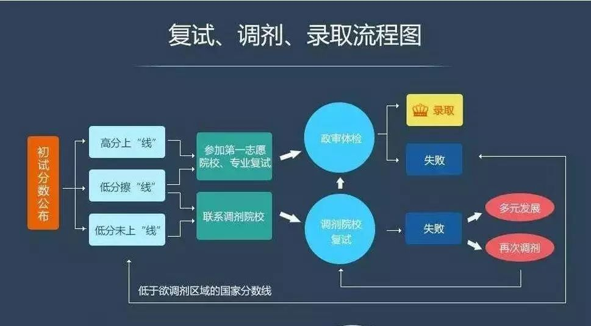

收录于合集

想调剂的同学请注意！
关注公众号后，请编辑自己的本科院校、目标院校、本硕专业、考研成绩，以及想说的话到后台。筛选后，小编会给你提供接受调剂的211知名院校，绝对靠谱，为保证信息价值，限量告知！（仅限社会科学类专业）
2月15日起，各地就将纷纷开通成绩查询入口，供大家进行查分。那么成绩出来之后，考生该怎么做呢?面对各类不同的情况，大家都需要做哪些准备?下面整理了7大类情况及要做的事，给同学们提前作参考!

一、如果你不幸落榜了
那么你最先要做的事情是冷静下来并拿出下一步的选择方案。或者找工作，或者来年继续考你心仪的专业。如果是这两种，那么请不用再看下去，直接该干什么干什么吧。
如果选择调剂，那么第一步还是冷静下来，要知道调剂并不是一件可耻或者羞赧的事情，它只不过是在你第一步选择失败后的补救和修正——试问，人这一辈子都能一帆风顺么?失败了一次就害怕面对第二次挑战，那么你失败的就不冤枉了。
二、如果决定好调剂
1、申请原来所报院校、专业的破格录取。
破格录取一般在公布了初试通过名单前后不久(根据往年经验，不超过一周)，针对的是总分足够高，专业课分数较高，只是公共课略差几分的同学(且差的最好不要超过5分)。许多34所和211的学校都是这么规定的。
如果达到了标准，那么请准备好：
1)不少于一名导师(一般都要两名)的破格推荐;
2)报考学校研究生招生部门的签字批准(有时候甚至要教学副校长的批准，这样的难度会更高一些);
3)以及破格费——通常是以“数万元人民币”作为单位的。申请破格如果成功，那么也就等于你通过了初试，可以去参加复试了。
2、在申请破格的同时，调剂上还有两个最优的选择：
1)报考学校的校内调剂;
2)你本科所在母校的同专业调剂。
前者因为你的报考，学校也爱惜人才，不想浪费资源;后者因为与你有特殊的感情，所以只要有机会，就能接受你的(不过，既然是调剂，就要至少达到人家要求的分数线)。
因此，落榜后第一步就是同时(记住，一定要同时，不要做完了一步再作下一步，时间不等人)做以上的事情。并且如果走到下一步，也别忘了与报考院校和母校保持联系，不要放过任何一次机会。
三、如果破格、校内调剂失败
校外调剂
记住一个原则：别挑肥拣瘦，既想去好学校又想找好专业。一般鱼与熊掌不能兼得，就自己拿主意。此外，有几点小经验：
1)多打电话给想要调剂的院校的招生办，并发动你的一切人际关系探听虚实。如果连打电话咨询的勇气都没有，那么就是自作孽不可活了;
2)你的本科老师如果关系好，他手上会有不少好资源，装得可怜一点、上进一点，找他们帮帮忙吧;
3)有些学校对外宣称没有调剂名额了，实际上都还有不少。一来是准备自己人校内调剂的，二来是给一些有关系的人预备的。如果你有人脉，记得挖挖看。
4)调剂申请可以同时申请多个，因此要广撒渔网。先地毯式搜索，找到了所有和目标专业类似的专业院校，再在其中选择可能开通调剂、或者有可能接受自己的名单，最后再给他们的招办一一打电话，不要害怕被拒绝，天无绝人之路，总会有几家表示可以开通调剂的，然后就是添申请表了。同时，对于其余的院校，也要跟进，不能放弃。做到了这个苦功夫，才能从中选到最适合自己的。
5)虽然国家没有明确提出，但院校是有等级的，也就是大家熟悉的：34所(一流)，A区，B区，通常从上至下可以调剂，即报考的学校越好，你的成绩越好，调剂的希望就越大。
四、挑中了中意的、可能接受你的院校和专业后
去“中国研究生招生信息网”(就是报名的那个网站)上，登记一下，并去调剂院校他们的研究生网页上，下载一份《调剂申请表》(有的学校则没有，都是在网站上统一填)，照着填了以后，尽快寄给欲调剂学校的研招办。填表过程中，你要注意如下事情：
1、《调剂申请表》里都会有“备注”一栏，别添那些“给我一次机会”，“我想深造”，“我喜欢贵校”之类的话。要添如下消息(按重要程度排序如下);
1)本科期间是否在核心期刊或学术期刊上发表文章(无论第几作者);
2)是否是省级、市级优秀学生、干部;
3)是否有过国家级奖学金;
4)本科毕业论文方向;参加社会活动的评价或者权威认证;
5)是否党员或其他民主党派。
总之保持一个原则：学术第一，社会活动为副，力求在让你的《调剂申请》资本更加厚重一些。
虽然这个程序在整个调剂中起到的作用不大，但也许关键时刻，会让你绝境逢生。
2、寄出《调剂申请》(或者网络登记)一定要快，有些学校说“根据分数排名，有多少人比你分数高”等等，不要相信。受理调剂，首先看得是《调剂申请》的送达时间，其次看这个学生的综合素质，已到达先后为主，分数为辅。
五、如果得到了申请调剂院校的准许
1、首先，电话联系，表示感谢;并找找调剂院校导师，表达一下自己的优势和想要深造的愿望;
2、其次，马上联系调剂院校的研招办，提出并催促对方寄出《调剂函》，《调剂函》这个东西可是太好了，见到了它，等于你成功了一半。所谓《调剂函》，就是调剂院校以“第二志愿”的名义，向你当初报考的第一志愿院校提出申请，调取你的档案、初试试卷、身份信息的公函。
《调剂函》送出有两种方式：通常负责的、好一些的学校会有研招办出面寄《调剂函》，你所需要的只是等待和适当的催促。另一种不负责任的学校，会让你自己寄这种重要的公函。自己行动快一些，并自己去催促你的第一志愿学校，学会做好第一志愿、第二志愿两所学校的沟通工作，这很重要!
3、最后，有研友反映说，具体学校不同，也可能不开《调剂函》，而是直接拿学生证或其它证件去研招办调信息。这个原理和《调剂函》是一样的。总之，必须要第二志愿学校以某种方式(如开《调剂函》)去第一志愿学校求证你的成绩、身份是否真实，这样调剂工作才十有八九差不多。
六、如果《调剂函》作用成功
第一志愿院校将你的全部信息转到了第二志愿院校，人家看过之后，认定了你是货真价实的，你要做的是
1、首先，再次感谢两所院校相关负责人的帮助;并且联系第二志愿的导师，表达一下自己的优势和渴望深造的热情。
2、调剂基本成功了，准备一下复试吧，要是复试都过不了，那是你自己的水平不济了——这里的“水平”，包括学术，包括做人，也包括人际关系。
七、如果参加了复试
1、要么成为了研究生;
2、要么失败，再去寻找别的机会，重复(三)开始的步骤;
3、要么心灰意冷退出。
需要指出的是两点：
1)即便调剂复试也失败，且没有学校再愿意要你了，这个时候，每个省的研招办还会有调剂，俗称“大区调剂”，不过那些机会一来比买彩票中500万还低，二来剩下的专业和学校都是连调剂生都不愿意去的地方，可想而知……
2)复试成功后，第二志愿单位就打算录取你了，这个时候会再去你的本科学校调取你的全部档案，包括成绩啊，组织关系啊，人事关系等等。这个时候，你如果觉得这学校我不想去了，或者有更好的学校给了你机会，那么你可以选择不让他们调档录取你，继续参加别的学校的复试去，于是乎就会出现一个学生可能参加多次复试的情况。
还有一种可能，因为确认考生成绩是很简单的事情，所以在接连几天内就去了好多家学校参加复试，然后都通过了，各个学校都想调你的档案录取你，你就可以选一选了。这个原理，就是利用复试结束到正式录取调档前的一段时间差。因为同学们可以多走几家，增加机会。
来源/社科学术圈
编辑/Alfie
最后， 祝愿考研的同学们接下来喜讯连连!